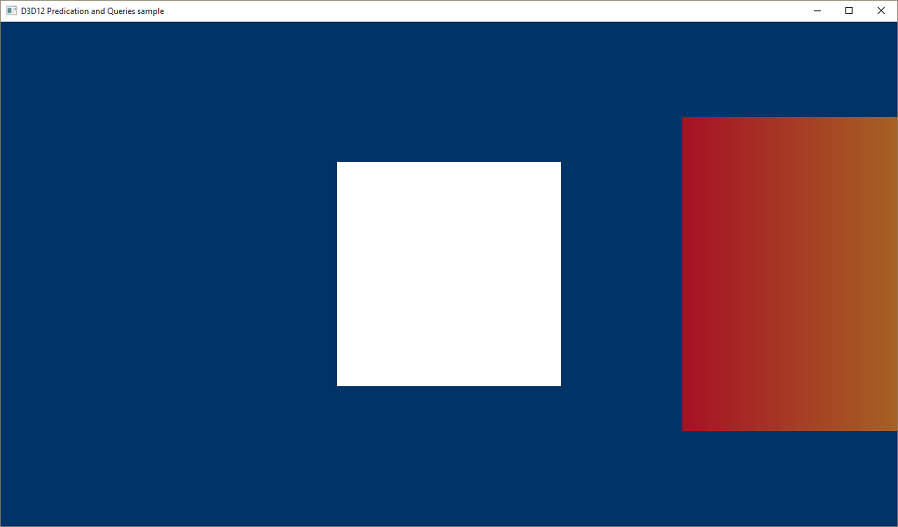
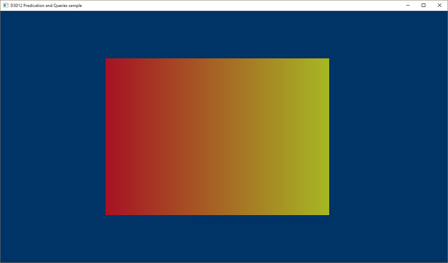
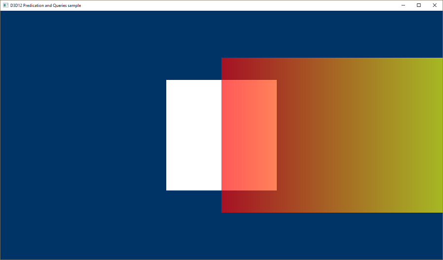

The D3D12PredicationQueries sample demonstrates occlusion culling using DirectX 12 query heaps and predication. The walkthrough describes the additional code needed to extend the HelloConstBuffer sample to handle predication queries.
In the LoadPipeline method create a depth stencil descriptor heap.
// Describe and create a depth stencil view (DSV) descriptor heap.
D3D12_DESCRIPTOR_HEAP_DESC dsvHeapDesc = {};
dsvHeapDesc.NumDescriptors = 1;
dsvHeapDesc.Type = D3D12_DESCRIPTOR_HEAP_TYPE_DSV;
dsvHeapDesc.Flags = D3D12_DESCRIPTOR_HEAP_FLAG_NONE;
ThrowIfFailed(m_device->CreateDescriptorHeap(&dsvHeapDesc, IID_PPV_ARGS(&m_dsvHeap)));
Â
In the LoadAssets method create a heap for occlusion queries.
// Describe and create a heap for occlusion queries.
D3D12_QUERY_HEAP_DESC queryHeapDesc = {};
queryHeapDesc.Count = 1;
queryHeapDesc.Type = D3D12_QUERY_HEAP_TYPE_OCCLUSION;
ThrowIfFailed(m_device->CreateQueryHeap(&queryHeapDesc, IID_PPV_ARGS(&m_queryHeap)));
| Call flow | Parameters |
|---|---|
| D3D12_QUERY_HEAP_DESC | D3D12_QUERY_HEAP_TYPE |
| CreateQueryHeap |
Â
This sample draws two quads and illustrates a binary occlusion query. The quad in front animates across the screen, and the one in back will occasionally be occluded. In the LoadAssets method, alpha blending is enabled for this sample so that we can see at what point D3D considers the quad in back occluded.
// Enable alpha blending so we can visualize the occlusion query results.
CD3DX12_BLEND_DESC blendDesc(CD3DX12_DEFAULT);
blendDesc.RenderTarget[0] =
{
TRUE, FALSE,
D3D12_BLEND_SRC_ALPHA, D3D12_BLEND_INV_SRC_ALPHA, D3D12_BLEND_OP_ADD,
D3D12_BLEND_ONE, D3D12_BLEND_ZERO, D3D12_BLEND_OP_ADD,
D3D12_LOGIC_OP_NOOP,
D3D12_COLOR_WRITE_ENABLE_ALL,
};
Â
The occlusion query is performed by rendering a quad that covers the same area as the quad whose visibility we want to test. In more complex scenes, the query would likely be a bounding volume, rather than a simple quad. In either case, a new pipeline state is created that disables writing to the render target and the z buffer so that the occlusion query itself does not affect the visible output of the rendering pass.
In the LoadAssets method, disable color writes and depth writes for the occlusion query's state.
// Disable color writes and depth writes for the occlusion query's state.
psoDesc.BlendState.RenderTarget[0].RenderTargetWriteMask = 0;
psoDesc.DepthStencilState.DepthWriteMask = D3D12_DEPTH_WRITE_MASK_ZERO;
ThrowIfFailed(m_device->CreateGraphicsPipelineState(&psoDesc, IID_PPV_ARGS(&m_queryState)));
| Call flow | Parameters |
|---|---|
| D3D12_GRAPHICS_PIPELINE_STATE_DESC | D3D12_DEPTH_WRITE_MASK |
| CreateGraphicsPipelineState |
Â
In the LoadAssets method a buffer needs to be created to store the results of the query. Each query requires 8 bytes of space in GPU memory. This sample only performs one query and for simplicity and readability creates a buffer exactly that size (even though this function call will allocate a 64K page of GPU memory - most real apps would likely create a larger buffer).
// Create the query result buffer.
CD3DX12_HEAP_PROPERTIES heapProps(D3D12_HEAP_TYPE_DEFAULT);
auto queryBufferDesc = CD3DX12_RESOURCE_DESC::Buffer(8);
ThrowIfFailed(m_device->CreateCommittedResource(
&heapProps,
D3D12_HEAP_FLAG_NONE,
&queryBufferDesc,
D3D12_RESOURCE_STATE_GENERIC_READ,
nullptr,
IID_PPV_ARGS(&m_queryResult)
));
Â
Having done the setup, the main loop is updated in the PopulateCommandLists method.
// Draw the quads and perform the occlusion query.
{
CD3DX12_GPU_DESCRIPTOR_HANDLE cbvFarQuad(m_cbvHeap->GetGPUDescriptorHandleForHeapStart(), m_frameIndex * CbvCountPerFrame, m_cbvSrvDescriptorSize);
CD3DX12_GPU_DESCRIPTOR_HANDLE cbvNearQuad(cbvFarQuad, m_cbvSrvDescriptorSize);
m_commandList->IASetPrimitiveTopology(D3D_PRIMITIVE_TOPOLOGY_TRIANGLESTRIP);
m_commandList->IASetVertexBuffers(0, 1, &m_vertexBufferView);
// Draw the far quad conditionally based on the result of the occlusion query
// from the previous frame.
m_commandList->SetGraphicsRootDescriptorTable(0, cbvFarQuad);
m_commandList->SetPredication(m_queryResult.Get(), 0, D3D12_PREDICATION_OP_EQUAL_ZERO);
m_commandList->DrawInstanced(4, 1, 0, 0);
// Disable predication and always draw the near quad.
m_commandList->SetPredication(nullptr, 0, D3D12_PREDICATION_OP_EQUAL_ZERO);
m_commandList->SetGraphicsRootDescriptorTable(0, cbvNearQuad);
m_commandList->DrawInstanced(4, 1, 4, 0);
// Run the occlusion query with the bounding box quad.
m_commandList->SetGraphicsRootDescriptorTable(0, cbvFarQuad);
m_commandList->SetPipelineState(m_queryState.Get());
m_commandList->BeginQuery(m_queryHeap.Get(), D3D12_QUERY_TYPE_BINARY_OCCLUSION, 0);
m_commandList->DrawInstanced(4, 1, 8, 0);
m_commandList->EndQuery(m_queryHeap.Get(), D3D12_QUERY_TYPE_BINARY_OCCLUSION, 0);
// Resolve the occlusion query and store the results in the query result buffer
// to be used on the subsequent frame.
m_commandList->ResourceBarrier(1, &CD3DX12_RESOURCE_BARRIER::Transition(m_queryResult.Get(), D3D12_RESOURCE_STATE_GENERIC_READ, D3D12_RESOURCE_STATE_COPY_DEST));
m_commandList->ResolveQueryData(m_queryHeap.Get(), D3D12_QUERY_TYPE_BINARY_OCCLUSION, 0, 1, m_queryResult.Get(), 0);
m_commandList->ResourceBarrier(1, &CD3DX12_RESOURCE_BARRIER::Transition(m_queryResult.Get(), D3D12_RESOURCE_STATE_COPY_DEST, D3D12_RESOURCE_STATE_GENERIC_READ));
}
Â
Not occluded:

Occluded:

Partially occluded:

Â
Â